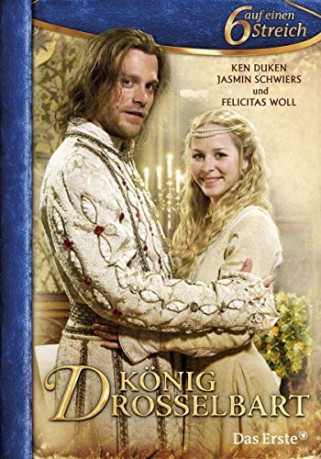

#11183 König Drosselbart
 
 IMDB-Wertung: 6.9 / 10
IMDB-Wertung: 6.9 / 10  Metascore: 0
Metascore: 0 
Arrogant spoiled princess Isabella of Gerania haughtily rejects all suitors, even prince Richard of Begonia, whom she liked in a previous anonymous meeting. Finally her exasperated royal father gives her hand to the first-come beggar. Richard disguises himself as such in secret, helped only by his sister Maximiliane, hoping to pull of an operation taming the shrew by making her earn her keep, but gradually despairs as her pride persists.
Jahr: 2008
Dauer: 57 Minuten
FSK:
Land: Deutschland Studio: ARDTonspuren:
Untertitel:
Auflösung: 720p (1280x720) Größe: 3368 MB
Genre: Fantasy, Familie, Liebe
Regisseur: Sibylle Tafel
Drehbuch: Jacob Grimm, Wilhelm Grimm, Anja Kömmerling, Thomas Brinx
Soundtrack: Enjott Schneider
Darsteller:
 Jasmin Schwiers als Prinzessin Isabella von Geranien
Jasmin Schwiers als Prinzessin Isabella von Geranien Ken Duken als Prinz Richard von Begonien / König Drosselbart
Ken Duken als Prinz Richard von Begonien / König Drosselbart Arthur Brauss als König Ottokar
Arthur Brauss als König Ottokar- Marisa Leonie Bach als Zofe
 Timo Jacobs als Husar
Timo Jacobs als Husar Manuel Cortez als Husar
Manuel Cortez als Husar- Katrin Filzen als Magd Berta (uncredited)
- Felicitas Woll als Maximiliane
- Hubert Mulzer als König August
- Mareike Lindenmeyer als Zofe
- Christina Wiederhold als Zofe
- Arved Birnbaum als Metzger (uncredited)
- Rainer Ewerrien als Wirt (uncredited)
- Robert Hofmann als Prinz Klaus von Nordforsythien (uncredited)
- Harald Pfeiffer als Königlicher Berater (uncredited)
- Carolin Weber als Fischverkäuferin (uncredited)
Datei: X:\Märchen\König Drosselbart (2008, FSK, 1280x720).mkv seit 09.05.2019
Festplatte: Kinder-Filme+Trick
 Es gibt insgesamt 61 Filme in der Gruppe 'Märchen'
Es gibt insgesamt 61 Filme in der Gruppe 'Märchen'